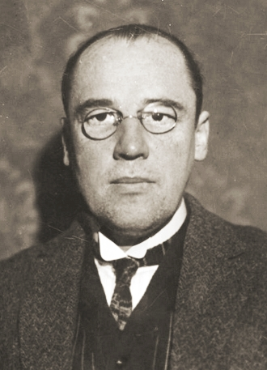
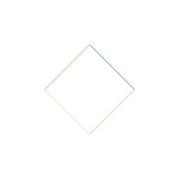

About "Triangula"

Triangula explores recursive triangle growth inspired by the Sierpinski triangle, one of the most recognizable fractal forms in mathematics.

The pattern is named for Waclaw Sierpinski, who described this triangle family in the early 20th century. In modern language, it is often introduced as a classic example of self-similarity: zooming in reveals smaller copies of the whole shape, again and again.

Recursion is the core idea behind this behavior. A recursive rule is a rule that re-applies to its own output. Here, each triangular generation becomes the input for the next generation, producing structure from repeated local rules.
To see recursion most clearly in this app, use parallel animation mode with 1st band coloring. That view makes each growth step visible as a collective generation, so the recursive layering is easier to read at a glance.
Triangula also supports alternative construction and coloring modes so you can compare how the same recursive framework produces different visual rhythms.